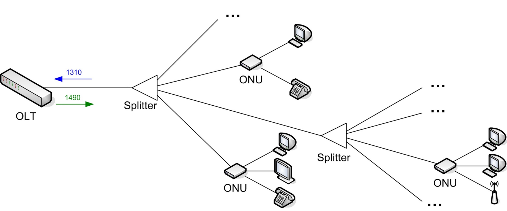
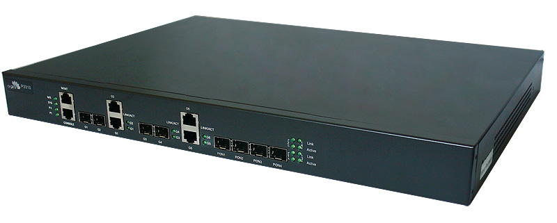
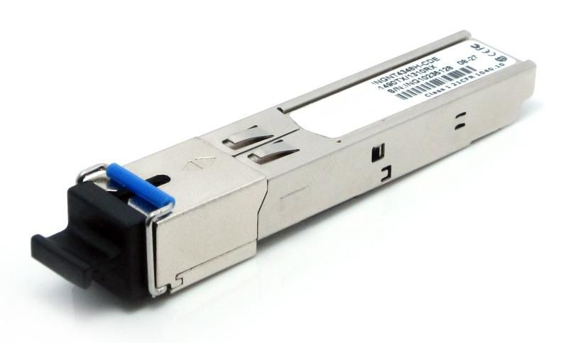
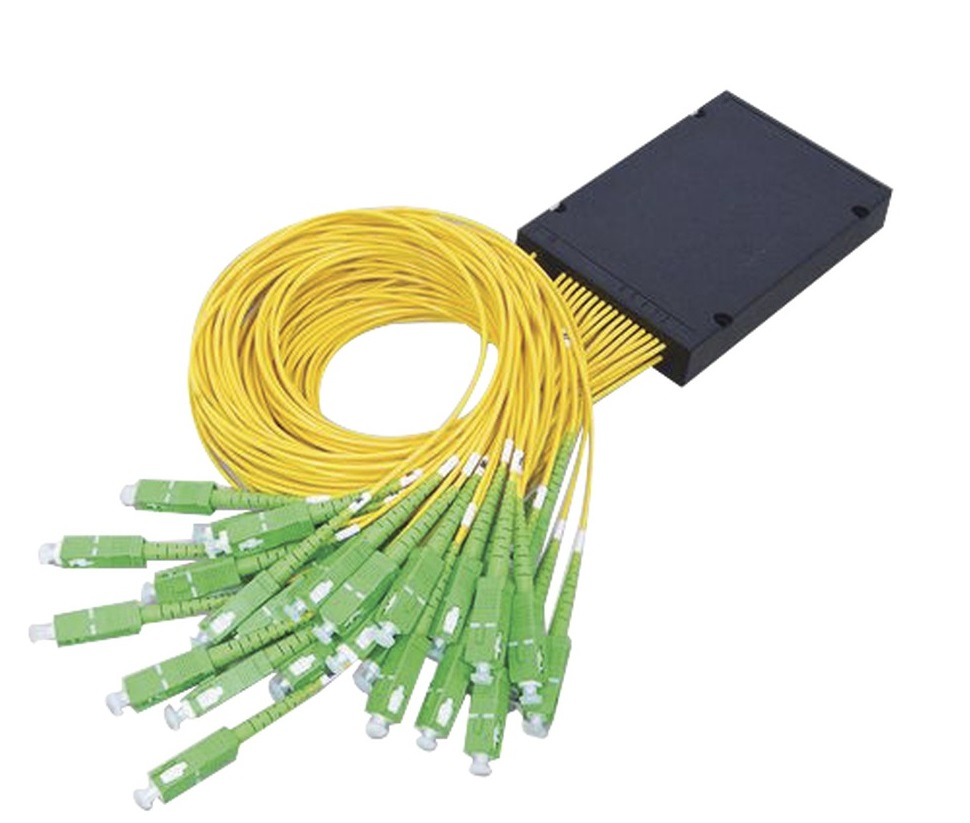
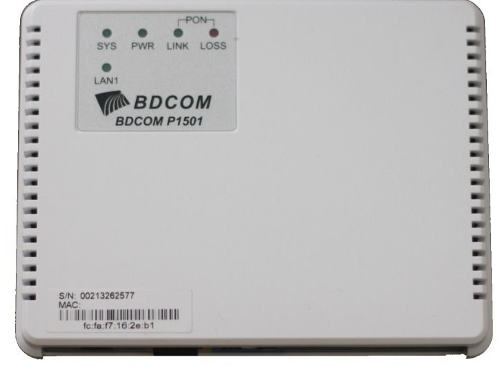

PON – (Passive Optical Network) что переводится, как пассивная оптическая сеть. Это, по сути, технология абонентского множественного доступа посредством одного волокна с применением временного мультиплексирования (TDM) и разделения частотного трактов приёма/передачи (WDM).
Основная идея архитектуры PON — использование всего одного приёмопередающего модуля в OLT (англ. optical line terminal) для передачи информации множеству абонентских устройств ONT (optical network terminal в терминологии ITU-T), также называемых ONU (optical network unit) в терминологии IEEE и приёма информации от них.
Схема подключения
OLT (Optical line termination) – свитч L2, оснащённый Uplink портами (чтобы подключаться к оборудованию L3 "шлюз") и Downlink портами (для создания сети PON).

Модуль SFP OLT – является специальным трансивером для сетей PON. Важное отличие от стандартных модулей SFP - большая мощность и кодирование канала.

Сплиттер (Разветвитель) – это устройство, которое работает в разветвительном режиме в направлении "провайдер - клиент" и в смесительном режиме в обратном направлении.

ONU (Optical Network Unit) – свитч "VLAN" компактного размера. Стандартно ONU оснащён 1-им оптическим 1Г портом (Uplink) и одним 1Г, либо 4-мя 100МБит медными портами (Downlink). Есть модели ONU c 8-ью, 16-ью и 24-мя портами

- SFP OLT модули поддерживают работу на дистанцию - 120 км (тип сети "точка-точка"), но поскольку, традиционно сеть PON имеет древовидную структуру (точка–много-точек), то максимальная дистанция работы PON, из-за разветвления на сплиттерах волокна, будет составлять около 20 км.
- Если абонентами PON дерева (64-мя абонентами) будет одновременно скачиваться из Интернета большой объём информации, то на каждого абонента придётся канал в 16 Мбит/с. А если ещё учесть, что не все абоненты Интернетом пользуются одновременно, а те, что пользуются, не потребляют ресурс канала по максимуму, то на абонента даже может приходиться до 50-ти Мбит/с, иногда даже выше.
- Если на одной/нескольких ONU - сигнальный уровень будет очень слабым (< -26 дБм), то появляется большая вероятность возникновения ошибок в пакетной передаче с таких ONU. В приведённом случае OLT растрачивает кванты времени на то, чтобы дать ONU возможность отправить ещё раз пакет. Эти повторные запросы понижают эффективность пропускной способности сети.
- Чтобы определить затухания в линии можно использовать специальные рефлектометры для PON (они существенно дороже обычных), либо оптическими тестерами. Когда сеть уже выстроена, то самым простым решением для проверки уровней сигналов - будет использование специальных команд командного интерфейса OLT-а.
- Каждая операция по обмену информацией между ONU происходит через OLT.
GPON (Gigabit Passive Optical Networks) базируется на стандарте ITU-T G.984
Преимуществами технологии GPON являются:
- полностью пассивная оптическая сеть;
- меньше затраты на электроэнергию;
- оборудование занимает меньше места;
- удобство обслуживания и простота подключения новых абонентов;
- возможность подключения по одному оптическому волокну до 64 абонентов.
GEPON (Gigabit Ethernet Passive Optical Networks) стандарт IEEE 802.3ah.
Преимуществами технологии GEPON являются:
- позволяет оптимально использовать волоконно-оптический ресурс кабеля;
- благодаря стандартным механизмам 802.3 ah происходит снижение стоимости
оборудования;
- возможность подключения по одному оптическому волокну до 16 абонентов;
- простота установки и обслуживания;
- передача потокового видео (IGMP Snooping).
Основным преимуществом GEPON является низкая цена по сравнению с
GPON.
GPON более удобной решение для сетей большой емкости и протяженности.
Но более сложное и дорогостоящее оборудование окупается только при высокой
степени загрузки.
В GEPON, в отличие от GPON, нет специфических функций поддержки
TDM, синхронизации и защитных переключений, что делает эту технологию самой
экономичной.